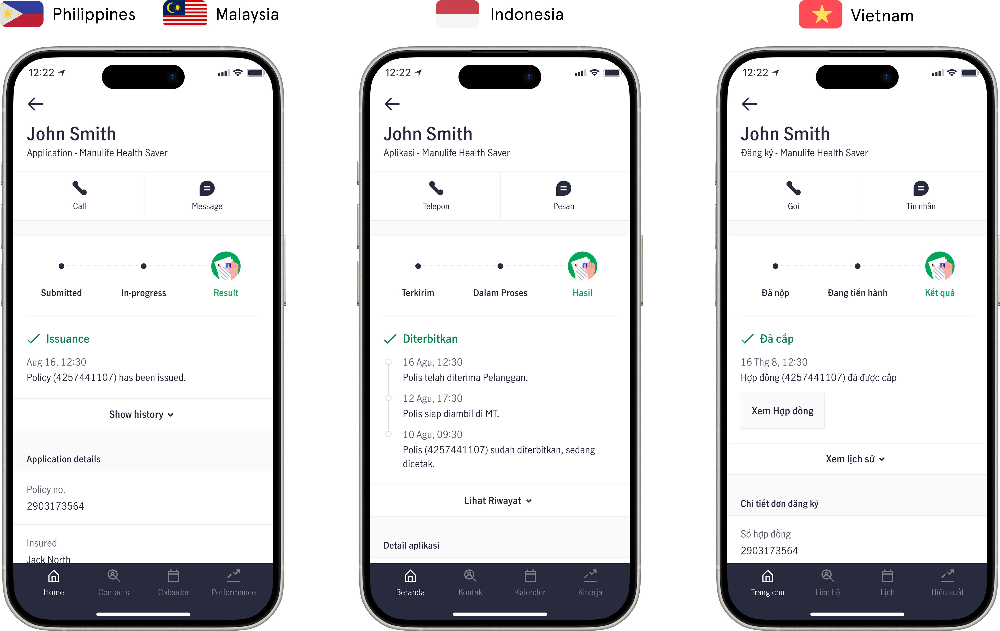
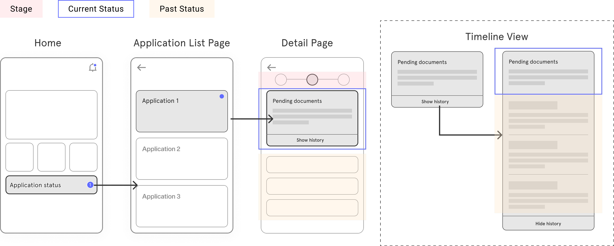
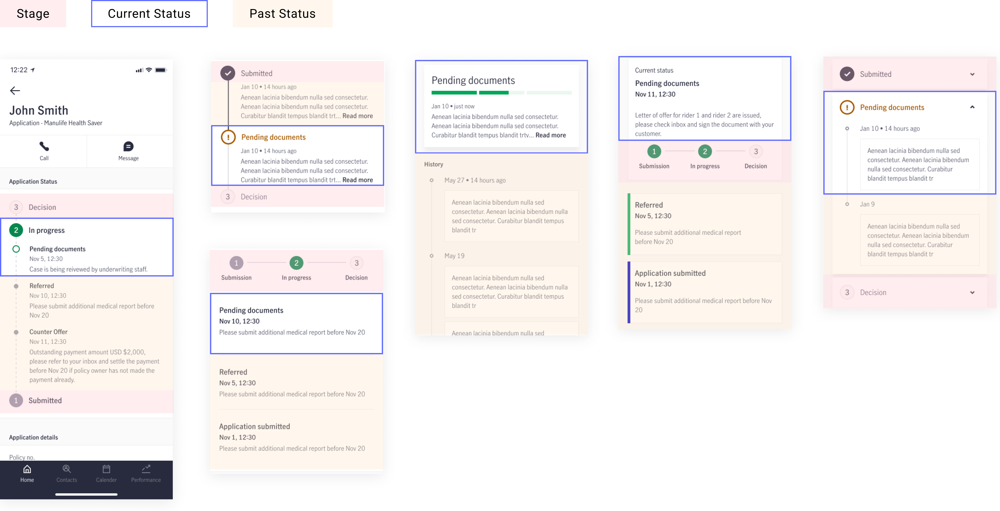
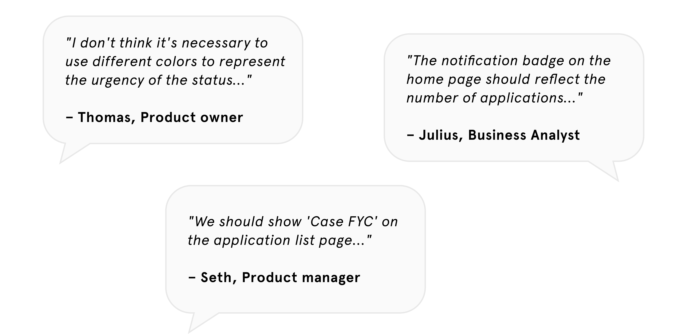
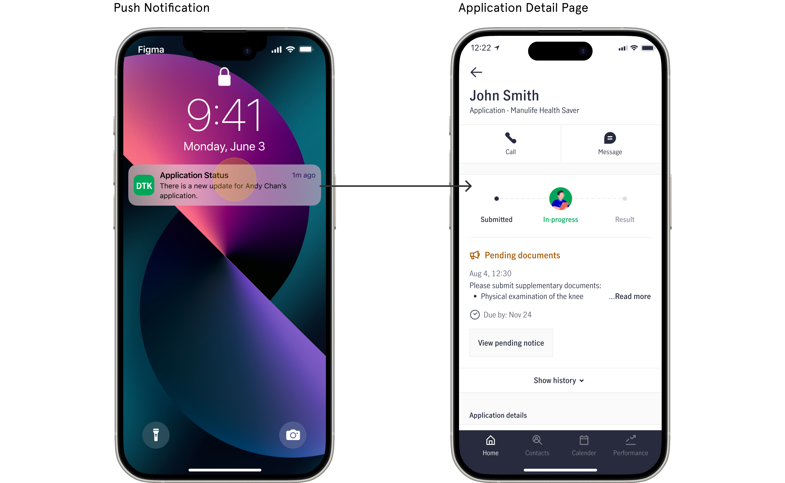

Policy Application Status Tracking
Insurance | B2B
Manulife (John Hancock) is a leading global insurance company. The Asian regional design team constantly seeks opportunities to improve the agent workflow throughout the sales journey. This project aimed to reduce policy application processing time and standardize the status tracking experience across four major Southeast Asian markets: Vietnam, Philippines, Indonesia, and Malaysia.
My Role
As the UX Designer, I drove the UX and UI design while collaborating with researchers, product managers, and engineers to create a unified agent experience across markets.
Problem
Agents lacked a reliable way to track applications. The manual process significantly impacted sales efficiency and led to customer complaints due to the long processing time.
Outcome
A single design that caters to all four market requirements.
Research
Our first step was to understand each market's current state, agent pain points, and application status update processes.
Agent Notification Workshop
We discovered that agents struggled with the manual workflow. The main pain point was they relied solely on system emails for updates, and often missing important information about pending cases and had to reach out to back-office staff for clarification.


Core vs Market Flow
To get a full picture of the current process, I closely worked with business analysts to interview the market teams. From there we mapped out the status journey with agent actions associate to it.


Design explorations
The design scope centered around the on-the-go context, as agents spend 70% of their time working outside. In addition to the ability to send push notifications for urgent updates, we adopted a progressive disclosure approach—providing visual cues to guide users to explore further when needed.
The detail page was information-packed; we spent a lot of time exploring layouts that would establish a logical information hierarchy.
When working with the product team, everyone had an opinion on the content updates. We documented this feedback and validated the critical ones in testing.
User Testing
Working alongside a research agency and testing the design in on-the-go scenarios, we evaluated its effectiveness with 19 agents from all four markets. Our goal was to identify gaps in agent needs between markets and resolve disagreements with the product team.


Key Observations:
- The needs when looking for an application vary by product type.
- Agents didn’t use the search function since they typically handle few applications simultaneously.
- Agents wanted more detailed status information for a more seamless workflow.
Final Design
With the testing insights, the product team and I were able to make better decisions about which functionality we should prioritize given our timeline and resources. We also deprioritized the search function, as the testing revealed that most agents only have a few applications at a time.
Scenario 1: Between customer meetings, insurance agents check the status of their customers' policy applications to ensure sales are secured.

Scenario 2: Agent receives a push notification about a pending application and details on how to resolve it with customers.
An intuitive timeline view that supports agents in different scenarios.
Handoff & Components
As the same pattern will be used for other status tracking features (Claims, Servicing), we worked with the engineering team to ensure the implementation is dynamic. We created components that are scalable and flexible enough to accommodate different needs such as long text or different languages.
Takeaways
For this regional intiative, I needed to take a broad consideration of scalability. Some markets display 6 statuses while others show 13 in the same journey. Being able to work with market stakeholders always provided insightful perspectives on how the design might or might not work for local agents. The next phase was to incorporate status updates in other parts of the sales journey. Having a core design helps the regional team improve and oversee the overall sales journey.